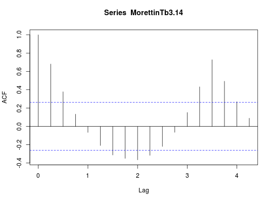

Dados de uma série de consumos de gasolina no estado da Califórnia, com peridiocidade trimestral no período de 1960 a 1973.
Uma série temporal (classe ts) com 56 observações
trimestrais, do primeiro trimestre de 1960 ao quarto trimestre de
1973.
Morettin, P. A., Toloi, C. M. C. (2006). Análise de Séries Temporais (2nd ed.). São Paulo, SP: Editora Egard Blucher. (Tabela 3.14 pág. 82)
data(MorettinTb3.14) str(MorettinTb3.14)#> Time-Series [1:56] from 1960 to 1974: 1335 1363 1464 1516 1639 ...MorettinTb3.14#> Qtr1 Qtr2 Qtr3 Qtr4 #> 1960 1335 1363 1464 1516 #> 1961 1639 1699 1763 1829 #> 1962 1939 2008 2152 2191 #> 1963 2391 2454 1443 1501 #> 1964 1450 1660 1754 1812 #> 1965 1937 1966 2099 2232 #> 1966 2313 2402 2549 2647 #> 1967 1529 1576 1611 1738 #> 1968 1839 1901 2001 2068 #> 1969 2201 2299 2393 2450 #> 1970 2602 2689 1447 1495 #> 1971 1612 1652 1736 1821 #> 1972 1894 1983 2081 2204 #> 1973 2278 2387 2529 2549# Comportamento da série plot(MorettinTb3.14, type = "o", pch = 19)# Decomposição sazonal plot(stl(MorettinTb3.14, 4))# Autocorrelação acf(MorettinTb3.14)